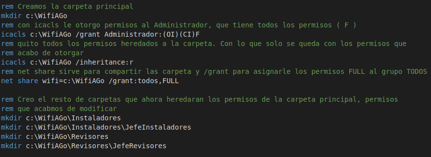
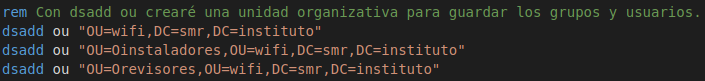
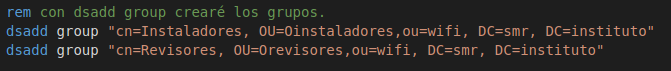
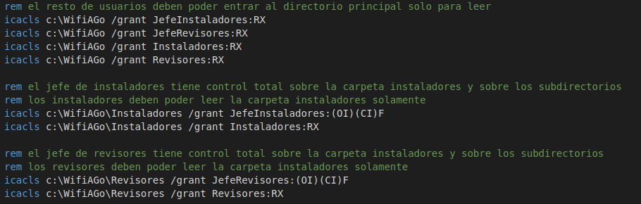

Enunciado
Crea un script que cree la siguiente estructura de directorios:- WifiAGogo
- Instaladores
- JefeInstaladores
- Instaladores 1 al 20
- Revisores
- JefeRevisores
- Revisores 1 al 10
- Instaladores
- WifiAGogo es una carpeta compartida para todos los usuarios, que solo pueden leerla, pero no pueden borrar, ni crear mas directorios.
- Instaladores es solo accesible por los instaladores y revisores solo por los revisores.
- JefeInstaladores tiene control total sobre las carpetas de instaladores.
- JefeRevisores tiene control total sobre las carpetas de revisores.
- Los revisores y los instaladores solo pueden leer sus carpetas, pero no pueden hacer nada mas, ni crear nada, ni modificar nada dentro de ellas.
Solucion
En este enlace puedes ver la solución al ejercicio comentada. Abrelo con un editor de codigo (NotePad++, sublime, Visual Studio Code,... ) para que sea mas facil de leer. Pruebalo en tu Active Directory, teniendo en cuenta que debes modificar el dominio del script con el tuyo propio.Para resolver la situación, una vez estudiado el problema, se aborda por partes. A continuación se presentan las secciones mas importantes del script.
Directorio principal
Primero se crean los directorios. Para simplificar la configuración de permisos, primero se configura la principal y despues se crean los directorios internos, para que estos directorios hereden los permisos de la carpeta contenedora. Si no lo hicieramos así, es decir, si creamos primero toda la estructura de directorios, tendriamos que otorgar todos los permisos a posteriori sobre todas las carpetas. Lo que implicaria repetir los primeros pasos sobre todos los directorios. 
Unidades organizativas
Como vamos a crear muchos usuarios, los organizaremos en unidades. Creamos una unidad general, llamada wifi, y otras dos dentro de esta para revisores e instaladores. 
Grupos.
Para simplificar la asignación de permisos creamos grupos. Esto nos permitirá asignar el permisos a las carpetas de un solo golpe, en vez de tener que ir que asignarlos uno por uno a cada revisor y cada instalador. 
Permisos
Asignamos permisos sobre las carpetas contenedoras. 